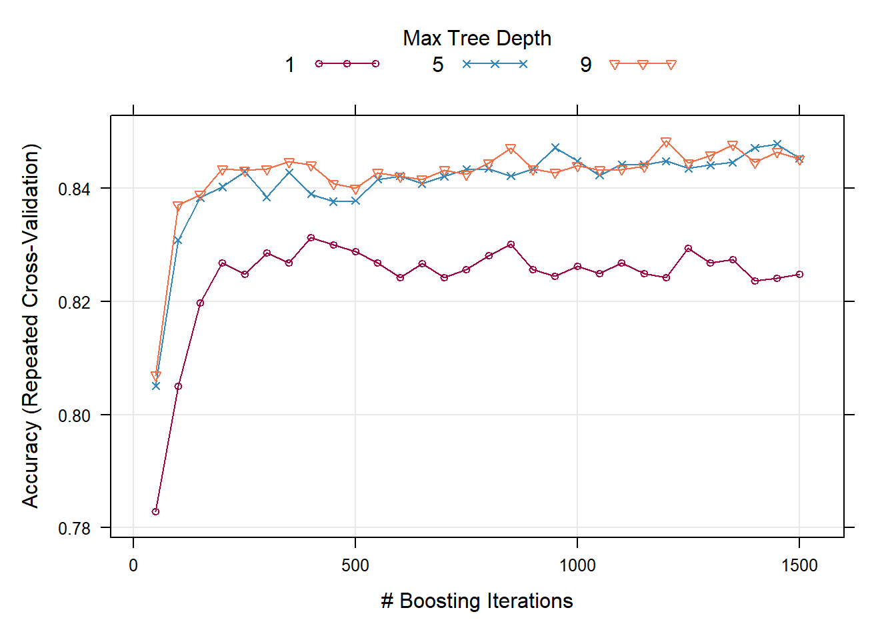
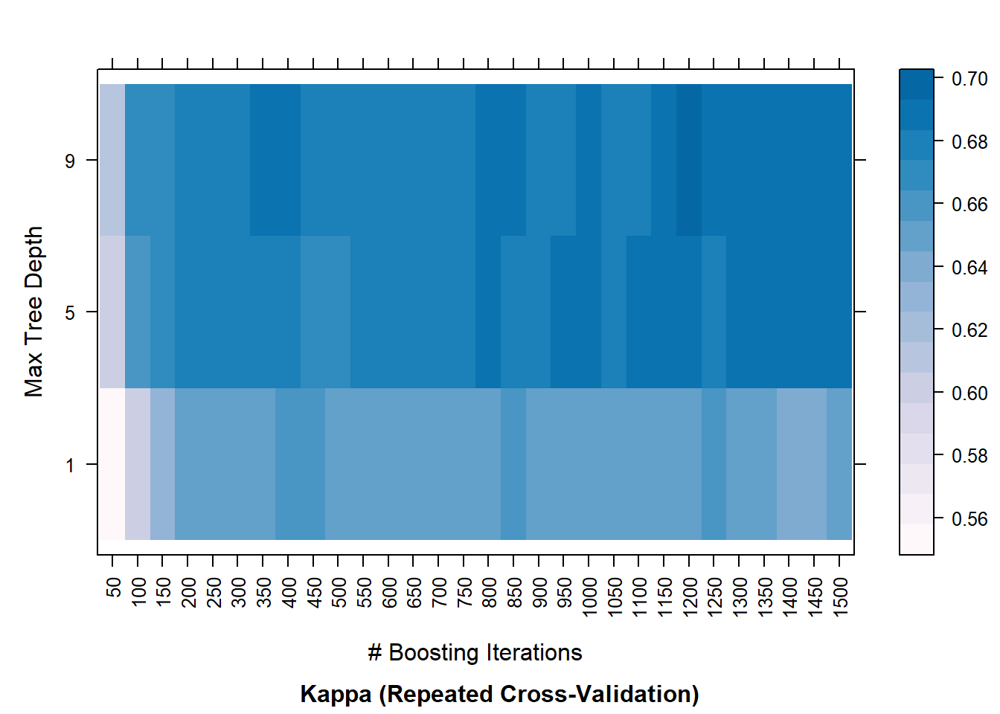
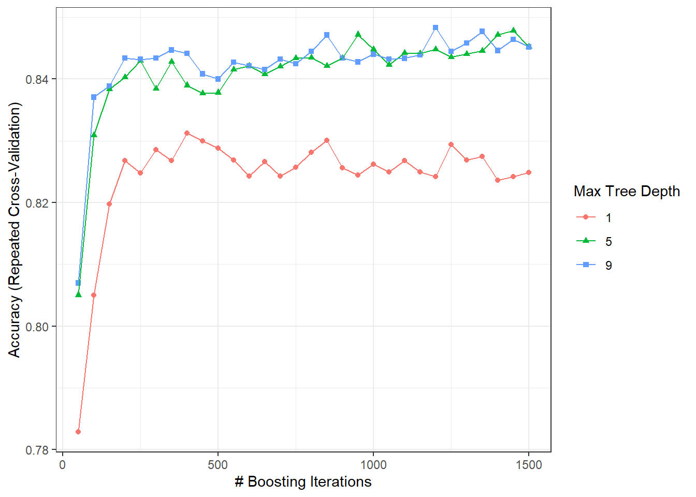
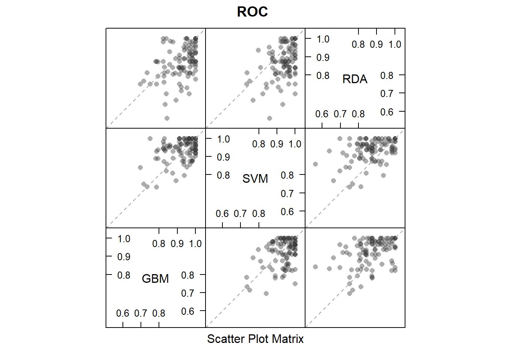
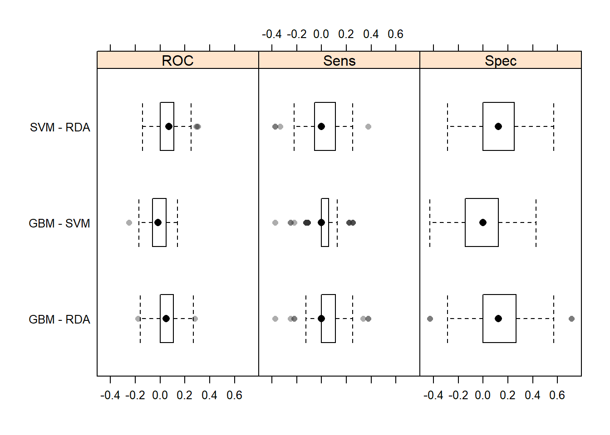

# 使用的数据集
library(mlbench)
data(Sonar)
str(Sonar[, 1:10])
## 'data.frame': 208 obs. of 10 variables:
## $ V1 : num 0.02 0.0453 0.0262 0.01 0.0762 0.0286 0.0317 0.0519 0.0223 0.0164 ...
## $ V2 : num 0.0371 0.0523 0.0582 0.0171 0.0666 0.0453 0.0956 0.0548 0.0375 0.0173 ...
## $ V3 : num 0.0428 0.0843 0.1099 0.0623 0.0481 ...
## $ V4 : num 0.0207 0.0689 0.1083 0.0205 0.0394 ...
## $ V5 : num 0.0954 0.1183 0.0974 0.0205 0.059 ...
## $ V6 : num 0.0986 0.2583 0.228 0.0368 0.0649 ...
## $ V7 : num 0.154 0.216 0.243 0.11 0.121 ...
## $ V8 : num 0.16 0.348 0.377 0.128 0.247 ...
## $ V9 : num 0.3109 0.3337 0.5598 0.0598 0.3564 ...
## $ V10: num 0.211 0.287 0.619 0.126 0.446 ...49 caret实现多模型比较
注意
这部分内容主要是几个综合性的机器学习和预测建模R包的介绍，更多的信息，可参考机器学习合集
本文主要演示caret包的基本使用，比如建模、重抽样方法选择、调参、可视化、模型比较等。
目前支持238个model。这个数目是mlr3和tidymodels不能比的！基本你知道的不知道的模型caret都支持（但是仅限分类和回归）！
关于每种模型的具体实现方法，背后的原理，超参数等，需要大家自己学习哦，我只提供R语言的实现方法。
下面用几个例子演示下。
49.1 数据划分
下面是一个分类数据的演示。
用caret包实现boosted tree模型。
# 加载R包，划分数据集
library(caret)
## Loading required package: ggplot2
## Loading required package: lattice
# 训练集、测试集划分，比例为0.75
set.seed(998)
inTraining <- createDataPartition(Sonar$Class, p = .75, list = FALSE)
training <- Sonar[inTraining,]
testing <- Sonar[-inTraining,]49.2 重抽样
trainControl()选择重抽样方法。
# 选择重抽样方法，重复10折交叉验证
fitControl <- trainControl(method = "repeatedcv", #默认是simple boost
number = 10,
repeats = 10,
classProbs = T # 计算概率
)
# 借助 gbm 包实现 boosted tree
set.seed(825)
gbmFit1 <- train(Class ~ .,
data = training,
method = "gbm",
trControl = fitControl,
verbose = FALSE)
gbmFit1
## Stochastic Gradient Boosting
##
## 157 samples
## 60 predictor
## 2 classes: 'M', 'R'
##
## No pre-processing
## Resampling: Cross-Validated (10 fold, repeated 10 times)
## Summary of sample sizes: 141, 142, 141, 142, 141, 142, ...
## Resampling results across tuning parameters:
##
## interaction.depth n.trees Accuracy Kappa
## 1 50 0.7935784 0.5797839
## 1 100 0.8171078 0.6290208
## 1 150 0.8219608 0.6383173
## 2 50 0.8041912 0.6027771
## 2 100 0.8296176 0.6544713
## 2 150 0.8283627 0.6520181
## 3 50 0.8110343 0.6170317
## 3 100 0.8301275 0.6551379
## 3 150 0.8310343 0.6577252
##
## Tuning parameter 'shrinkage' was held constant at a value of 0.1
##
## Tuning parameter 'n.minobsinnode' was held constant at a value of 10
## Accuracy was used to select the optimal model using the largest value.
## The final values used for the model were n.trees = 150, interaction.depth =
## 3, shrinkage = 0.1 and n.minobsinnode = 10.结果很详细，就不做解释了。
上面的例子也展示了caret包建模的基本语法，就是一个train()就可以了，method参数选择模型，trControl选择重抽样方法，preProcess选择数据预处理方法（上面这个例子没有进行数据预处理）。
49.3 超参数调整
上面是交叉验证的例子，并没有加入超参数调优的环节，下面将加入超参数调优的过程。
但是说实话caret虽然是一个整合包，但是对于每一种算法，它支持调整的超参数都很有限！
# 网格搜索，首先设定超参数范围
gbmGrid <- expand.grid(interaction.depth = c(1, 5, 9),
n.trees = (1:30)*50,
shrinkage = 0.1,
n.minobsinnode = 20)
nrow(gbmGrid)
## [1] 90
head(gbmGrid)
## interaction.depth n.trees shrinkage n.minobsinnode
## 1 1 50 0.1 20
## 2 5 50 0.1 20
## 3 9 50 0.1 20
## 4 1 100 0.1 20
## 5 5 100 0.1 20
## 6 9 100 0.1 20# 设置种子数，进行建模
set.seed(825)
gbmFit2 <- train(Class ~ .,
data = training,
method = "gbm",
trControl = fitControl,
verbose = FALSE,
tuneGrid = gbmGrid # 设定网格范围
)
gbmFit2
#saveRDS(gbmFit2,file = "./datasets/gbmFit2.rds")上面这个结果非常详细。
除了网格搜索，还提供常见的其他方法，大家感兴趣的自己探索即可，我这里只是简单演示基本用法。
在探索这个结果之前，让我们先看看caret强大的模型结果的可视化功能。
# 展示不同参数下的模型性能
trellis.par.set(caretTheme())
plot(gbmFit2) 
# 更改性能指标
trellis.par.set(caretTheme())
plot(gbmFit2, metric = "Kappa")
#?plot.train 获取更多细节！
trellis.par.set(caretTheme())
plot(gbmFit2, metric = "Kappa", plotType = "level",
scales = list(x = list(rot = 90)))
# 支持ggplot2
ggplot(gbmFit2)+theme_bw() # ?xyplot.train
trainControl()可用来选择重抽样方法，选择是否需要计算概率（分类数据）等，这个函数非常重要，可以使用?trainControl查看细节。
# trainControl函数用来设置非常多的东西，很重要
fitControl <- trainControl(method = "repeatedcv",
number = 10,
repeats = 10,
classProbs = TRUE, # 计算概率
summaryFunction = twoClassSummary # 二分类变量指标
)
# 选择好之后开始调优
set.seed(825)
gbmFit3 <- train(Class ~ .,
data = training,
method = "gbm",
trControl = fitControl,
verbose = FALSE,
tuneGrid = gbmGrid,
metric = "ROC" # 选择指标
)
gbmFit3
#saveRDS(gbmFit3,file = "./datasets/gbmFit3.rds")train()函数中的metric参数可以指定调优的指标，默认分类模型是accuracy和Kappa，回归模型是RMSE/R^2/MAE。
trainControl()中的summaryFunction参数还提供了额外的调优指标选项，比如上面这个twoClassSummary，内含3种指标：敏感度、特异度、ROC。
49.4 选择最终模型
其实经过上面的train()训练后得到的gbmFit3就已经包含了我们最终的模型，如果你不需要额外的操作，那现在这个gbmFit3就可以直接用于测试集了。
predict(gbmFit3, newdata = head(testing), type = "prob")
## M R
## 1 3.215213e-02 9.678479e-01
## 2 1.000000e+00 3.965815e-08
## 3 6.996088e-13 1.000000e+00
## 4 9.070652e-01 9.293483e-02
## 5 2.029754e-03 9.979702e-01
## 6 9.999662e-01 3.377548e-05
predict(gbmFit3, newdata = head(testing))
## [1] R M R M R M
## Levels: M R同时你也可以用$符号查看各种结果，比如：
gbmFit3$finalModel # 最终模型
gbmFit3$bestTune # 选择的超参数
gbmFit3$results # 包含各种指标的详细结果除此之外，caret还提供了另外3个函数帮助你自定义选择最终的模型： - best:根据某一指标选择，选择使某个指标最大或最小的模型 - oneSE:使用1倍标准差法选择最终模型 - tolerance:根据某一指标选择最简单的模型
下面是一个tolerance的演示，其他两个也是一样的使用方法：
whichTwoPct <- tolerance(gbmFit3$results,
metric = "ROC",
tol = 2, # 这个参数是tolerance函数特有的
maximize = TRUE)
gbmFit3$results[whichTwoPct,1:6]
## shrinkage interaction.depth n.minobsinnode n.trees ROC Sens
## 32 0.1 5 20 100 0.9139707 0.864583349.5 应用于测试集
上面已经介绍过了，直接使用即可。
caret对predict()函数进行了优化，type=prob计算概率，type=class计算类别。tidymodels完整继承了这个优点。
predict(gbmFit3, newdata = head(testing))
## [1] R M R M R M
## Levels: M R
predict(gbmFit3, newdata = head(testing), type = "prob")
## M R
## 1 3.215213e-02 9.678479e-01
## 2 1.000000e+00 3.965815e-08
## 3 6.996088e-13 1.000000e+00
## 4 9.070652e-01 9.293483e-02
## 5 2.029754e-03 9.979702e-01
## 6 9.999662e-01 3.377548e-0549.6 多个模型的比较
49.6.1 多建立几个模型
set.seed(825)
svmFit <- train(Class ~ .,
data = training,
method = "svmRadial",
trControl = fitControl,
preProc = c("center", "scale"),
tuneLength = 8,
metric = "ROC")
set.seed(825)
rdaFit <- train(Class ~ .,
data = training,
method = "rda",
trControl = fitControl,
tuneLength = 4,
metric = "ROC")
#save(svmFit, rdaFit,file = "./datasets/svm_rda_fit.rdata")一起放入resamples()函数里面：
resamps <- resamples(list(GBM = gbmFit3,
SVM = svmFit,
RDA = rdaFit))
resamps
##
## Call:
## resamples.default(x = list(GBM = gbmFit3, SVM = svmFit, RDA = rdaFit))
##
## Models: GBM, SVM, RDA
## Number of resamples: 100
## Performance metrics: ROC, Sens, Spec
## Time estimates for: everything, final model fit
summary(resamps)
##
## Call:
## summary.resamples(object = resamps)
##
## Models: GBM, SVM, RDA
## Number of resamples: 100
##
## ROC
## Min. 1st Qu. Median Mean 3rd Qu. Max. NA's
## GBM 0.6964286 0.874504 0.9454365 0.9216468 0.9821429 1 0
## SVM 0.7321429 0.905878 0.9464286 0.9339658 0.9821429 1 0
## RDA 0.5625000 0.812500 0.8750000 0.8698115 0.9392361 1 0
##
## Sens
## Min. 1st Qu. Median Mean 3rd Qu. Max. NA's
## GBM 0.5555556 0.7777778 0.8750000 0.8787500 1 1 0
## SVM 0.5000000 0.7777778 0.8888889 0.8730556 1 1 0
## RDA 0.4444444 0.7777778 0.8750000 0.8604167 1 1 0
##
## Spec
## Min. 1st Qu. Median Mean 3rd Qu. Max. NA's
## GBM 0.4285714 0.7142857 0.8571429 0.8119643 1.0000000 1 0
## SVM 0.4285714 0.7142857 0.8571429 0.8205357 0.9062500 1 0
## RDA 0.1428571 0.5714286 0.7142857 0.6941071 0.8571429 1 0结果就很强！分别给出了3种指标下的每种模型的统计值。
49.6.2 多个模型可视化
喜闻乐见的结果可视化也是必不可少的。主要包括以下几种：density plots, box-whisker plots, scatterplot matrices and scatterplots
# 设主题
theme1 <- trellis.par.get()
theme1$plot.symbol$col = rgb(.2, .2, .2, .4)
theme1$plot.symbol$pch = 16
theme1$plot.line$col = rgb(1, 0, 0, .7)
theme1$plot.line$lwd <- 2
# 画图，箱线图
trellis.par.set(theme1)
bwplot(resamps, layout = c(3, 1))
# 密度图
trellis.par.set(theme1)
densityplot(resamps)
# 换个指标，点线图
trellis.par.set(caretTheme())
dotplot(resamps, metric = "ROC")
# 散点图
trellis.par.set(theme1)
xyplot(resamps, what = "BlandAltman")
# 散点图矩阵
splom(resamps)
49.6.3 多个模型的显著性检验
除此之外，我们还可以对不同模型之间的差异进行显著性检验，比如t检验。
difValues <- diff(resamps)
difValues
##
## Call:
## diff.resamples(x = resamps)
##
## Models: GBM, SVM, RDA
## Metrics: ROC, Sens, Spec
## Number of differences: 3
## p-value adjustment: bonferroni
summary(difValues)
##
## Call:
## summary.diff.resamples(object = difValues)
##
## p-value adjustment: bonferroni
## Upper diagonal: estimates of the difference
## Lower diagonal: p-value for H0: difference = 0
##
## ROC
## GBM SVM RDA
## GBM -0.01232 0.05184
## SVM 0.3408 0.06415
## RDA 5.356e-07 2.638e-10
##
## Sens
## GBM SVM RDA
## GBM 0.005694 0.018333
## SVM 1.0000 0.012639
## RDA 0.4253 1.0000
##
## Spec
## GBM SVM RDA
## GBM -0.008571 0.117857
## SVM 1 0.126429
## RDA 8.230e-07 1.921e-10结果的可视化：
trellis.par.set(theme1)
bwplot(difValues, layout = c(3, 1))
trellis.par.set(caretTheme())
dotplot(difValues)
是不是很强！
49.7 使用默认超参数
直接提供超参数的值，这种情况不能进行重抽样，把超参数的值直接提供给tuneGrid参数即可。
fitControl <- trainControl(method = "none", classProbs = TRUE)
set.seed(825)
gbmFit4 <- train(Class ~ .,
data = training,
method = "gbm",
trControl = fitControl,
verbose = FALSE,
# 直接提供超参数的值
tuneGrid = data.frame(interaction.depth = 4,
n.trees = 100,
shrinkage = .1,
n.minobsinnode = 20),
metric = "ROC")
gbmFit4
predict(gbmFit4, newdata = head(testing))
predict(gbmFit4, newdata = head(testing), type = "prob")以上就是caret典型使用的演示，更多的例子我们慢慢介绍，逐渐深入。